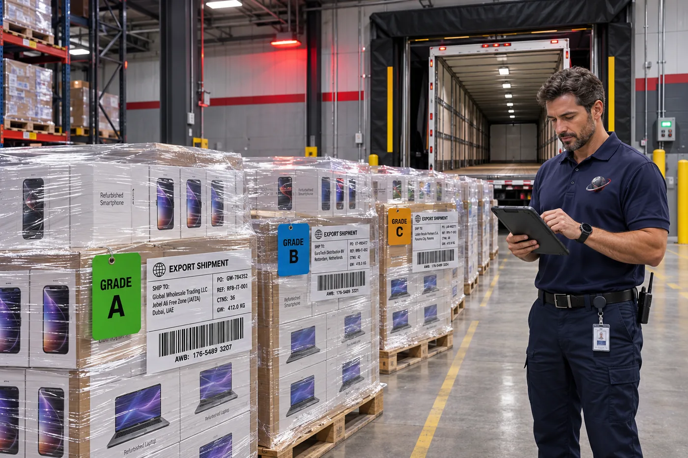

Channel strategy
Decide which recovered product goes where (retail, wholesale, export, B2B, or parts) to maximize net recovery.
Recovering a unit is only half the job. We help you sell it well through the right channels, buyers, and partners, and build the business around it.
The same four problems show up in almost every reverse supply chain. Here’s how we close them.
Handling costs accumulate
Leaner workflows with fewer touches per unit
Recoverable units get downgraded
Consistent grading and targeted refurbishment
Inventory sits too long
Clear disposition rules and faster routing
Valuable channels go unused
New buyers plus wholesale and export channels

photos/value-channels.jpg or .pngRecovered product is often sold through whichever outlet is easiest, not the one that pays the most. We build channel strategies and buyer networks across the United States, United Kingdom, Middle East, and Asia, so every grade has a home and every unit has a price worth taking.
photos/value-partners.jpg or .pngMost reverse programs depend on several outside partners. We source them, set clear expectations, and connect them, so your 3PL, processors, technology providers, and downstream buyers work as one system instead of a chain of hand-offs.
Let’s talk about the product you’re recovering today and the channels that could be paying more for it.